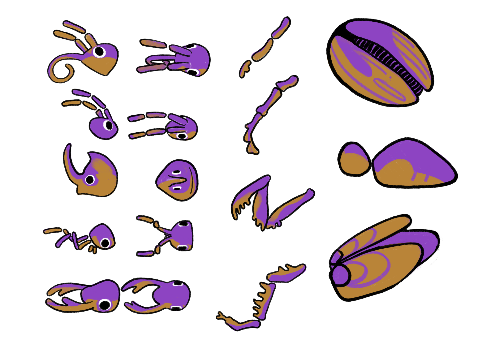
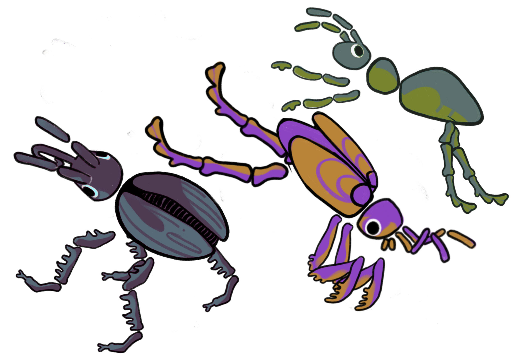
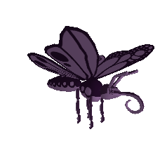
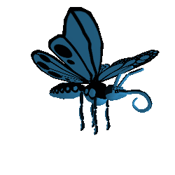
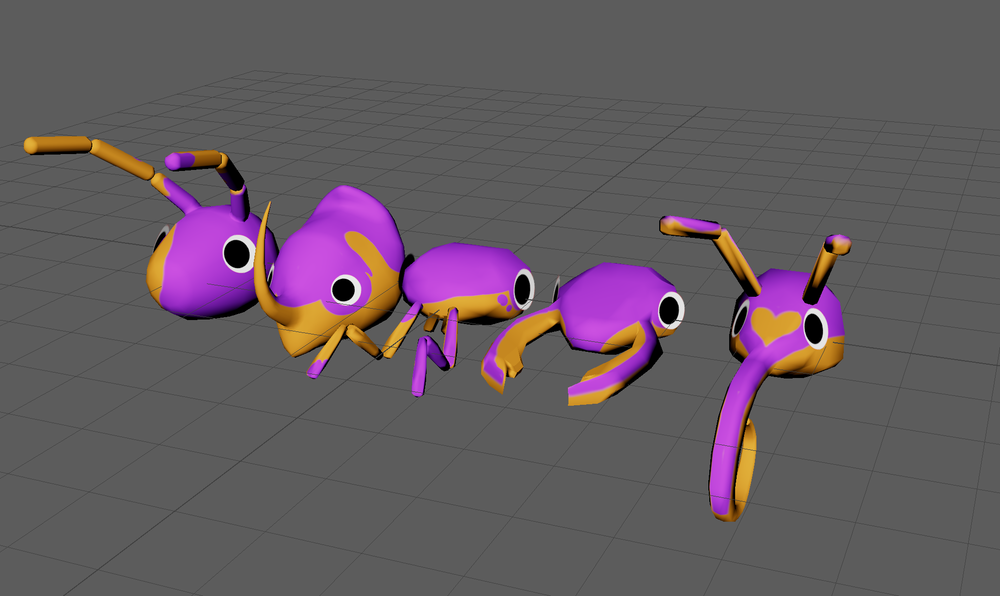

← All projects
Unity (C#) Looking Glass Portrait Maya Substance Painter
Case Study
BugBox
Overview: BugBox is a holographic idle simulation built for the Looking Glass display, designed to mimic the wonder of a virtual ant farm. Players customize modular low-poly bugs, observe emergent behaviors within an interactive terrarium, and influence creature interactions in a playful sandbox environment.
See it in ActionKey Features
- Bug customization
- Omnidirectional AI pathfinding
- Interactive terrarium
- Holographic multi-angle viewing
- Day/night cycles
- Biome variety
Gallery





Contributions
Art & Design
- Modeled and textured low-poly beetle, ant, and grasshopper rigs with interchangeable modular parts and customizable texture support.
- Designed concept art establishing a colorful, approachable visual identity.
Development
- Engineered bug AI with omnidirectional pathfinding and environment interaction systems.
- Built player-facing UI for real-time bug customization.
Impact
- Modular rig architecture enables combinatorial customization without additional modeling work per variant.
- Reduced cross-discipline handoff friction by handling 3D production and systems integration.
- Navigated a full engine migration mid-project, delivering a working holographic build under time constraint.
Quick facts
Aug 2024 — Dec 2024 · RIT School of Interactive Games & Media
Team
3-person collaboration